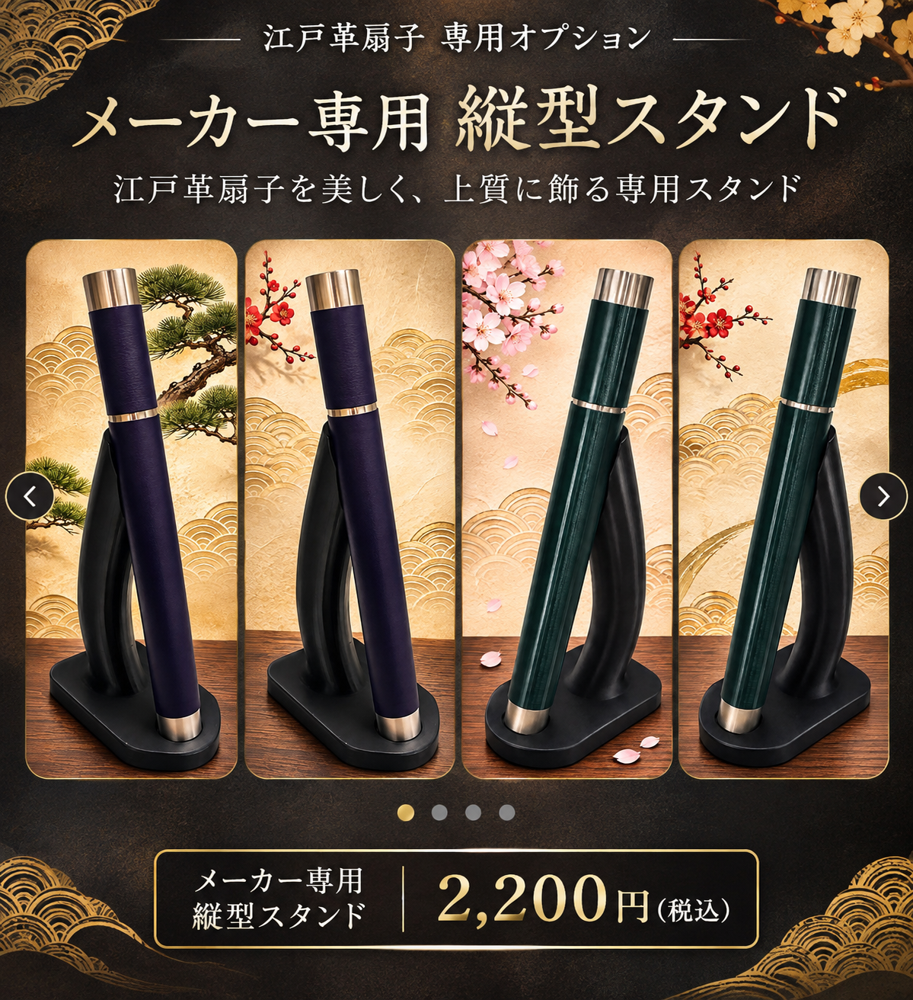
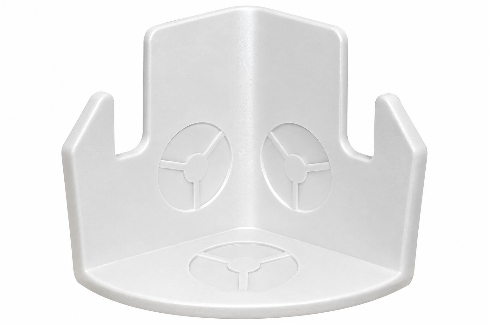

GG工業 オリジナル商品
江戸の伝統技術と現代のものづくりをつなぐ。GG工業が企画するオリジナル商品をご紹介します。
ORIGINAL PRODUCTS

01｜メーカー専用 縦型スタンド
江戸革扇子を美しく、上質に飾る専用スタンドです。
販売価格：2,200円（税込）
02｜簡易スタンド

選択色：No.01 ホワイト
江戸革扇子のオリジナルロゴ入り。
扇子は千歳緑で固定。
スタンドはお好みの30色から選べます。
選べる30色
880円（税込）

03｜GGi 2WAYスタンド
江戸革扇子を壁掛けでも卓上でも 美しく飾ることができる2WAYスタンドです。
【セット特別価格】1,980円（税込）
壁掛けスタンド単品 1,320円（税込）
卓上用ベース単品 880円（税込）
セットでも、単品でもお求めいただけます。

04｜kazuharu1603 Japan オリジナル扇子ケース
お好みの文字やオリジナル刻印を入れることができます。
オリジナル仕様はメールでのお見積もりが必要です。
ORDER & CONTACT
既製品のご購入はこちら
既製品の購入サイトGG工業オリジナル商品の見積もり・お問い合わせ
メールでお問い合わせメール：kazuhau2027@gmail.com
お支払い方法
ゆうちょ銀行へのお振込みとなります。
振込先はご注文確定後にご案内いたします。
発送方法
発送方法・送料はご注文内容に応じてご相談となります。